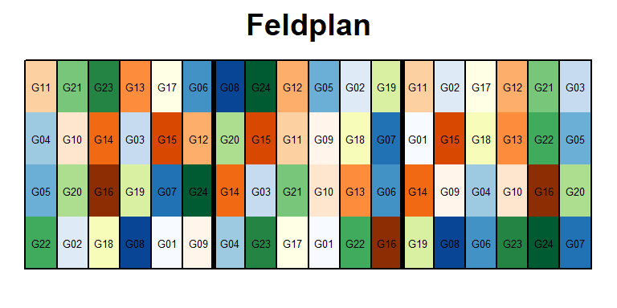

1 Setup & Import
library(data.table) # bessere Datenmanipulation
library(ggplot2); library(ggfortify) # bessere plots
library(emmeans) # adjustierte Mittelwerte
library(lme4); library(lmerTest) # Gemischtes ModellDieses Beispiel ist den Beispielen “1wayANOVA_crd” und “1wayANOVA_rcbd” sehr ähnlich und baut darauf auf. Zunächst importieren wir den Beispieldatensatz john.alpha aus dem agridat package und formatieren es als data.table Objekt.
library(agridat) # agrarwissenschaftliche Beispieldatensätze
alpha <- data.table(john.alpha)Dieses Experiment wurde als ein \(\alpha\)-lattice angelegt. Demnach haben wir unvollständige Blöcke innerhalb von vollständigen Blöcken. Die ‘rep’ Spalte steht für die vollständigen Blöcke, die ‘block’ Spalte für die unvollständigen Blöcke. Um die Trennung der beiden schon in der Namensgebung eindeutiger zu machen werden wir die ‘block’ Spalte umbennen zu ‘inc.block’ (incomplete block). Schließlich werden wir im Gegensatz zu den vorangegangenen 1wayANOVA Beispielen keinerlei Sorten/Daten ausschließen, sondern den vollständigen Datensatz mit dem korrekten Modell auswerten.
alpha <- alpha[, -c("plot")] # "plot" ist selbst hier überflüssig
names(alpha)[2] <- "inc.block" # "block" ist die zweite Spalte2 Deskriptive Statistik
Erst wollen wir ein Gefühl für den Datensatz bekommen und betrachten einige Kennzahlen zu den Daten, sowie zwei Plots. Im Vergleich zu den vorangegangenen 1wayANOVA Beispielen erstellen wir diesmal auch einen komplexeren Boxplot via boxplot(), in dem eine Box pro unvollständigem Block zu sehen ist.
head(alpha[order(gen)])## rep inc.block gen yield
## 1: R1 B5 G01 5.1202
## 2: R2 B4 G01 5.7161
## 3: R3 B1 G01 4.6512
## 4: R1 B2 G02 4.3350
## 5: R2 B5 G02 5.1566
## 6: R3 B2 G02 4.0510plot(y=alpha$yield, x=alpha$gen)
summary(alpha)## rep inc.block gen yield
## R1:24 B1:12 G01 : 3 Min. :2.887
## R2:24 B2:12 G02 : 3 1st Qu.:4.110
## R3:24 B3:12 G03 : 3 Median :4.404
## B4:12 G04 : 3 Mean :4.480
## B5:12 G05 : 3 3rd Qu.:4.968
## B6:12 G06 : 3 Max. :5.876
## (Other):54plot(y=alpha$yield, x=alpha$rep)
boxplot(yield ~ rep + inc.block, data=alpha, las=2) #las=2 dreht Achsenbeschriftung
3 Schließende Statistik
3.1 Gemischtes Modell
Wir können uns nun entschließen die Daten mittels eines Modells zu analysieren. Der Ertrag ist unsere metrische Zielvariable. ‘Sorte’ ist ein qualitativer Faktor. Außerdem haben wir den qualitativen Faktor ‘rep’ im Modell. Im Gegensatz zu den vorangegangenen 1wayANOVA Beispielen müssen wir diesmal auch Effekte für die unvollständigen Blöcke modellieren. Diese sind ebenso qualitativ, sollten aber in diesem Fall als zufällige Effekte genommen werden. Somit haben wir gleichzeitig feste und zufällige Effekte im Modell und demnach ein gemischtes Modell. Die Funktion lm() ist nicht in der Lage gemischte Modelle anzupassen, sodass wir in diesem Beispiel zu lmer() aus dem lme4 package wechseln, welches immer zusammen mit dem lmerTest() package geladen werden sollte. Die Syntax ist dem von lm() recht ähnlich, mit dem Unterschied, dass zufällige Effekte generell wie folgt codiert werden:
mod <- lmer(yield ~ gen + rep + (1|rep:inc.block), data=alpha)Randnotiz: Es fällt auf, dass wir den zufälligen Effekt für die unvollständigen Blöcke zusammen mit rep und getrennt durch einen Doppelpunkt geschrieben haben. Das liegt daran, wie die ‘inc.block’ Spalte in diesem Datensatz angelegt wurde. SIe enthält lediglich die 6 verschiedenen Einträge B1-B6. Es gab allerdings in jedem vollständigem 6, also insgesamt 18 unvollständige Blöcke. Ähnlich wie bei dem Boxplot oben muss also die Kombination aus ‘rep’ und ‘inc.block’ angegeben werden um im Modell die 18 korrekten zufälligen Effekte für die unvollständigen Blöcke anzupassen. Als Alternative hätte man auch direkt B1-B18 in die ‘inc.block’ Spalte und demnach (1|inc.block) ins Modell schreiben können. Zunächst sollten nun die Residuenplots evaluiert werden, was bei einem lmer() Objekt nicht mit autoplot(mod), sondern beispielsweise mit plot(mod) und qqnorm(resid(mod)); qqline(resid(mod)) funktioniert. Erst danach ist eine Varianzanalyse zulässig.
3.2 Varianzanalyse
anova(mod)## Type III Analysis of Variance Table with Satterthwaite's method
## Sum Sq Mean Sq NumDF DenDF F value Pr(>F)
## gen 10.6786 0.46429 23 34.736 5.4478 4.376e-06 ***
## rep 1.5703 0.78513 2 10.394 9.2124 0.004992 **
## ---
## Signif. codes: 0 '***' 0.001 '**' 0.01 '*' 0.05 '.' 0.1 ' ' 1Obwohl der Befehl anova(mod) exakt derselbe scheint wie in den vorangegangenen 1wayANOVA Beispielen, wird er nun durch das lmerTest package durchgeführt, sodass andere Berechnungen durchgeführt werden, die besser für Varianzanalysen von gemischten Modellen geeignet sind. Der F-Test für den Faktor ‘Sorte’ zeigt einen p-Wert < 0.05 und somit signifikante Unterschiede zwischen den Sorten. Demnach wissen wir nun, dass es mindestens einen signifikanten Unterschiede zwischen den Sorten gibt, aber nicht zwischen welchen Sorten. Um dies herauszufinden ist es üblich multiple Mittelwertvergleiche durchzuführen (z.B. t-test oder Tukey-test).
3.3 Multipler Mittelwertvergleich
Mit emmeans() erhalten wir in einem Zug sowowhl die Mittelwerte für jede Sorte, als auch die Differenzen zwischen allen Sortenmittelwerten. Es ist sehr praktisch, dass das emmeans package nicht nur lm() Objekte, sondern auch lmer() Objekte, also gemischte Modelle, als Grundlage für die adjustierte Mittelwertschätzung verwenden kann.
means <- emmeans(mod, pairwise ~ gen, adjust="tukey")
as.data.table(means$emmeans)[1:6,] # 6 der 24 Mittelwerte ## gen emmean SE df lower.CL upper.CL
## 1: G01 5.107700 0.1990122 44.32700 4.706700 5.508699
## 2: G02 4.478532 0.1990122 44.32700 4.077533 4.879531
## 3: G03 3.499200 0.1990122 44.32700 3.098200 3.900199
## 4: G04 4.490095 0.1990122 44.32700 4.089095 4.891094
## 5: G05 5.037210 0.1989050 44.28463 4.636417 5.438004
## 6: G06 4.536662 0.1989050 44.28463 4.135868 4.937456as.data.table(means$contrasts)[1:6,] # 6 der 276 Differenzen## contrast estimate SE df t.ratio p.value
## 1: G01 - G02 0.62916742 0.2753985 39.06267 2.2845707 0.8028476437
## 2: G01 - G03 1.60849988 0.2740562 38.53561 5.8692330 0.0001803976
## 3: G01 - G04 0.61760500 0.2740562 38.53561 2.2535704 0.8194173419
## 4: G01 - G05 0.07048919 0.2613108 35.91550 0.2697523 1.0000000000
## 5: G01 - G06 0.57103738 0.2740696 38.54725 2.0835491 0.8976547456
## 6: G01 - G07 0.99656336 0.2613101 35.91456 3.8137192 0.0658591109Es fällt auf, dass im Vergleich zum Beispiel “1wayANOVA_crd” deutlich mehr Differenzen/paarweise Vergleiche angezeigt werden. Das liegt daran, dass wir dort nur 3 Sortenmittelwerte miteinander verglichen haben, während es hier 8 sind. Mit steigender Sortenanzahl n steigt die Anzahl aller möglichen Sortenvergleiche n(n-1)/2 sehr schnell an. Beim Betrachten der p-Werte fällt außerdem wieder auf, dass nicht alle Differenzen signifikant sind. Bei dieser größeren Anzahl Sorten wird deutlich wie hilfreich die Buchstabendarstellung ist, welche wir erneut mit dem CLD() statement erzeugen können.
means <- CLD(means$emmeans, details=TRUE, Letters=letters)
as.data.table(means$emmeans)[1:6,]## gen emmean SE df lower.CL upper.CL .group
## 1: G03 3.499200 0.1990122 44.32700 3.098200 3.900199 ab
## 2: G09 3.502181 0.1989050 44.28463 3.101387 3.902975 a c
## 3: G20 4.039985 0.1989050 44.28463 3.639191 4.440779 abcd
## 4: G07 4.111136 0.1990122 44.32700 3.710137 4.512135 abcd
## 5: G24 4.153874 0.1990122 44.32700 3.752875 4.554873 abcd
## 6: G23 4.252449 0.1989050 44.28463 3.851655 4.653243 abcdErneut wollen wir die Ergebnisse abschließend in einem Balkendiagramm darstellen. Die einzigen Unterschiede zu dem Code des Plots im Beispiel “1wayANOVA_rcbd” sind (i) die x-Koordindate des annotate() statements und (ii) die 90°-Drehung der Buchstaben im geom_text() statement.
ggplot(data=means$emmeans, aes(x=reorder(gen, emmean))) +
geom_bar(aes(y=emmean), stat="identity", width=0.8) +
geom_errorbar(aes(ymin=lower.CL, ymax=upper.CL), width=0.4) +
geom_text(aes(y=(upper.CL)*1.1, label=.group, angle = 90)) +
labs(y="Adjustierter Ertragsmittelwert ± 95% Konfidenzintervall", x="Sorte") +
theme_bw() +
annotate(geom="label", y=1, x=12, size=3, color="grey50", fill="white",
label="Mittelwerte, die mit einem gemeinsamen Buchstaben versehen sind,\n sind laut Tukey-test nicht signifikant voneinander verschieden.")